إدارة وتأسيس المناحل التجارية
- التخطيط الفني واللوجستي لتأسيس المناحل من الصفر.
- تحديد المواقع المناسبة، التغطية النباتية، وإستراتيجيات التجييش والتنقل الفصلي.
- إدارة السلالات، انتخاب الملكات، والحد من ظاهرة التطريد.
خبير واستشاري تربية النحل
قسم بحوث النحل بمعهد بحوث وقاية النباتات — مركز البحوث الزراعية
خبير واستشاري متقدم في مجالات تربية النحل، إنتاج العسل، وإدارة المناحل التجارية والمستدامة بخبرة تمتد منذ عام 1992. أجمع بين الخبرة الميدانية العريقة والبحث العلمي الأكاديمي والتطبيقي من خلال عملي بقسم بحوث النحل بمعهد بحوث وقاية النباتات (مركز البحوث الزراعية بالإسكندرية).
أقدم خدمات استشارية وتدريبية وإدارية موجهة للشركات، كبار المربين، والمستثمرين لتطوير وإنشاء المناحل وفق أعلى معايير الجودة والإنتاجية.
اضغط على أي شهادة لتكبيرها، ثم اضغط عليها مرة أخرى لتعرف تفاصيلها

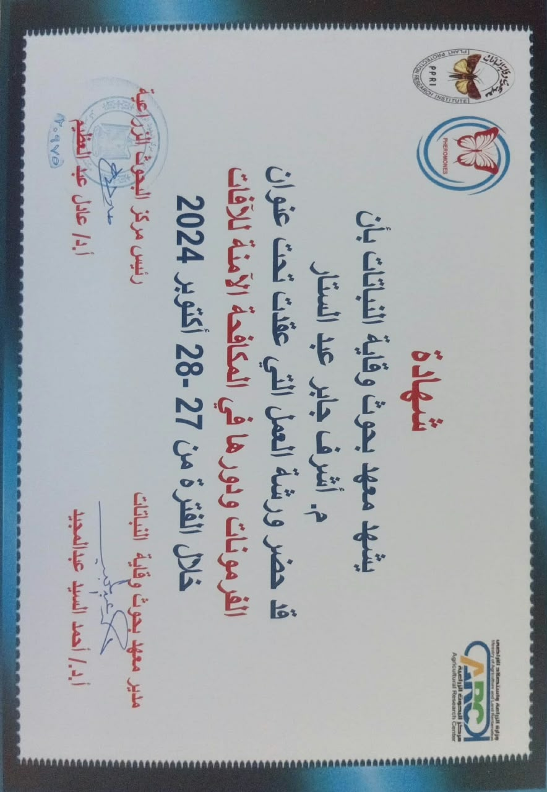
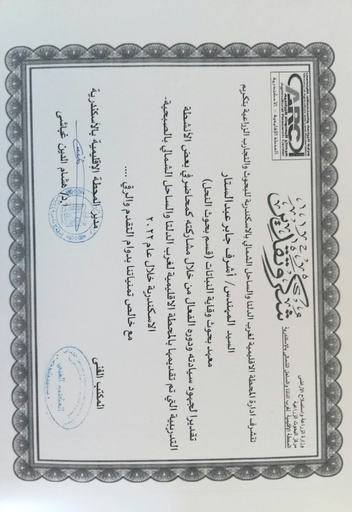
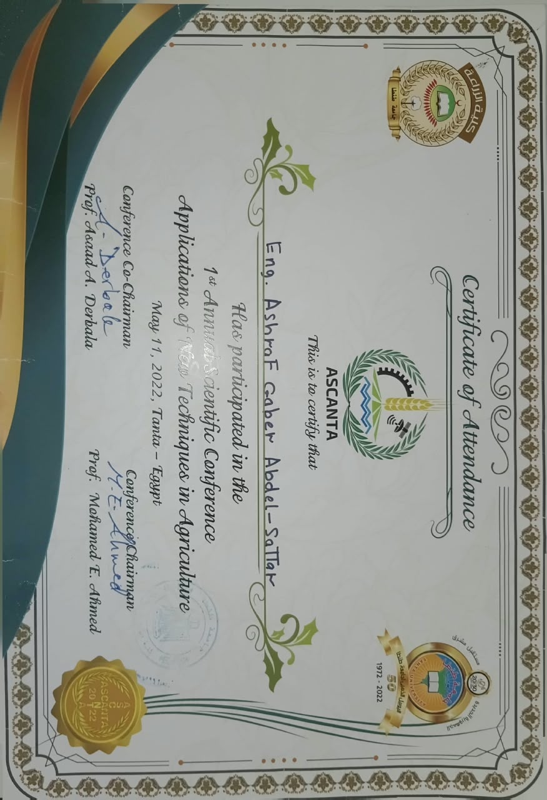
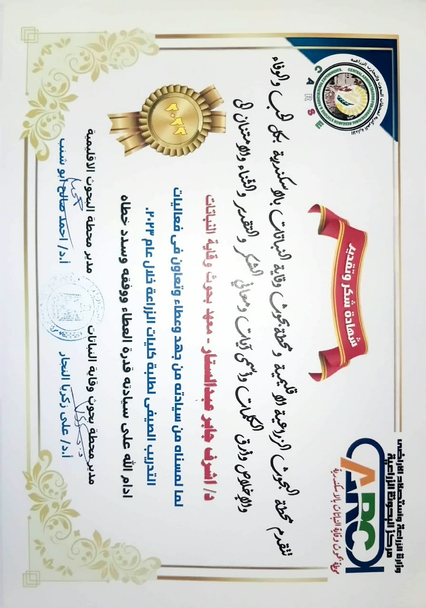
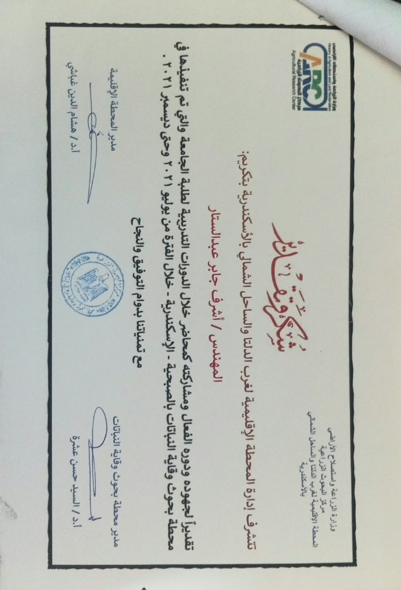
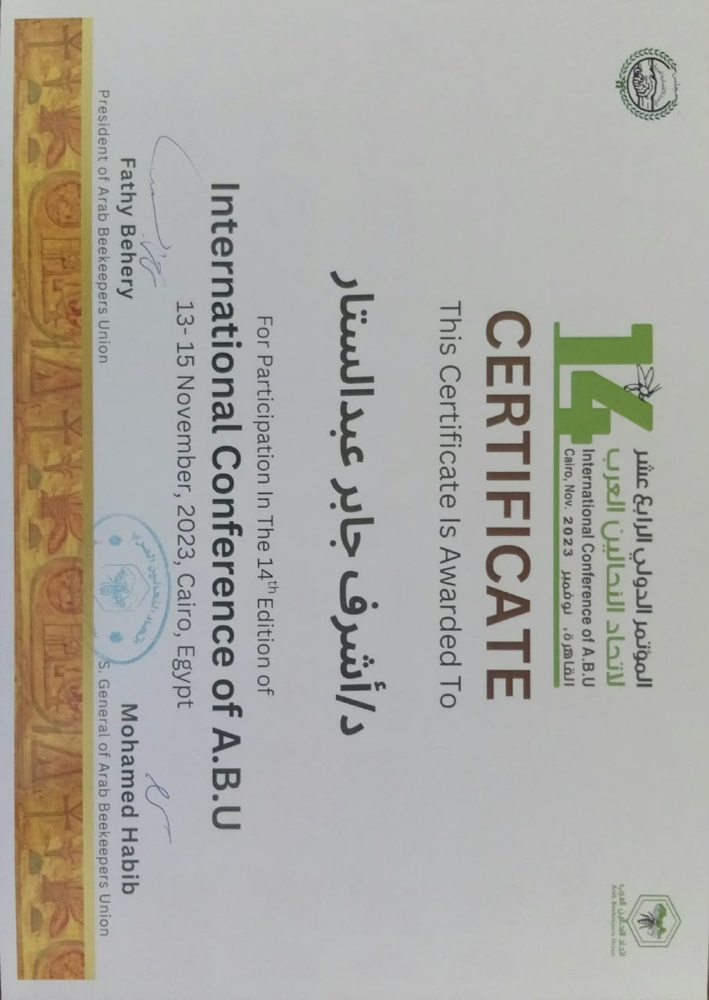

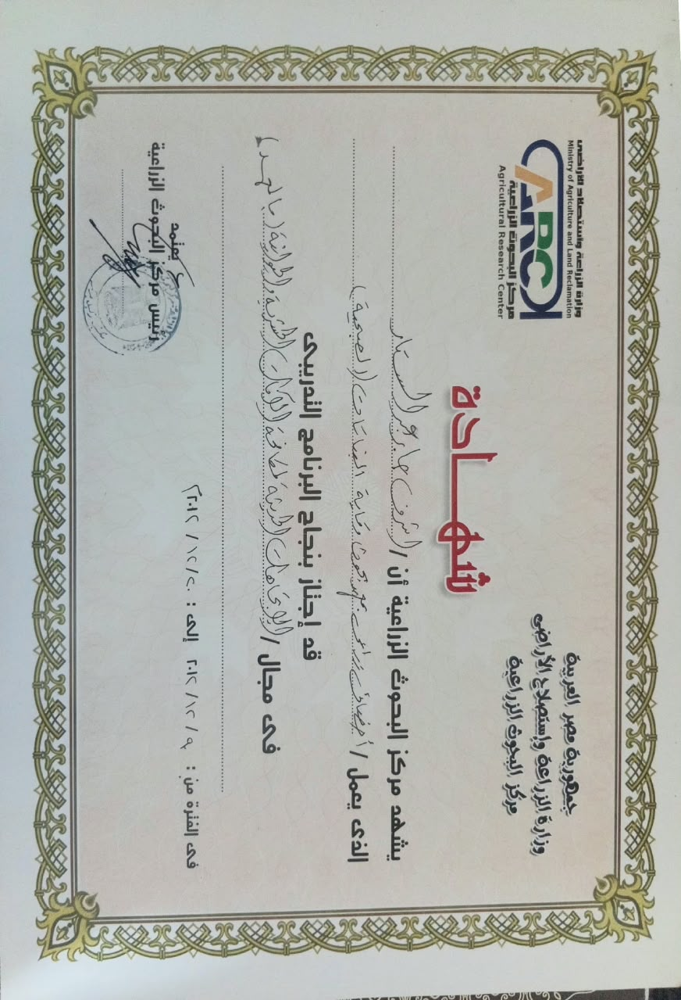
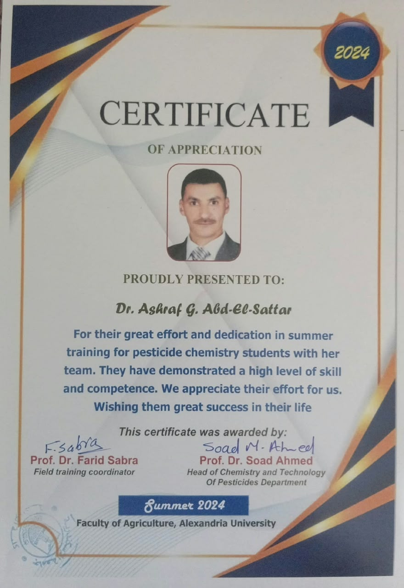
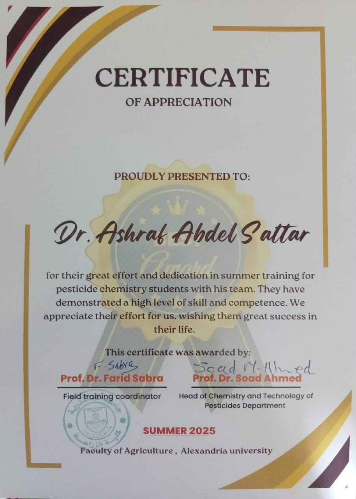
التدريب الميداني وفحص الخلايا: صور توثق الورش التدريبية الحية مع الطلاب والمربين داخل المنحل، الشرح على الأقراص الشمعية، ومعاينة حركة النحل والأدوات.
المحاضرات النظرية: صور تقديم الشروح العلمية باستخدام الوسائط المرئية وشاشات العرض حول شروط إنشاء المناحل وسلوك الملكة.
التكريمات والمؤتمرات: صور الشهادات المعتمدة من الجامعة والمراكز البحثية والاتحادات العربية.

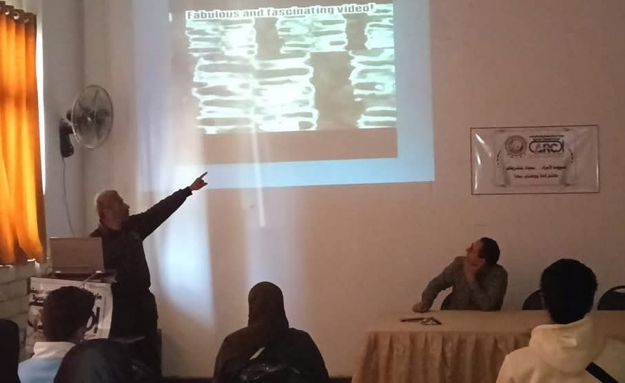


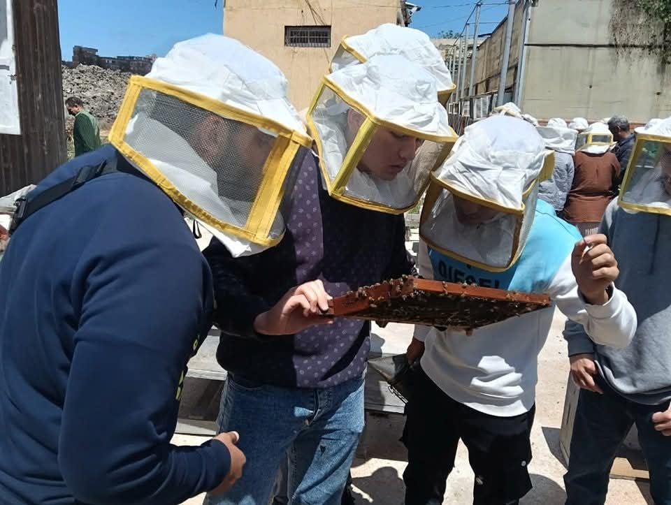


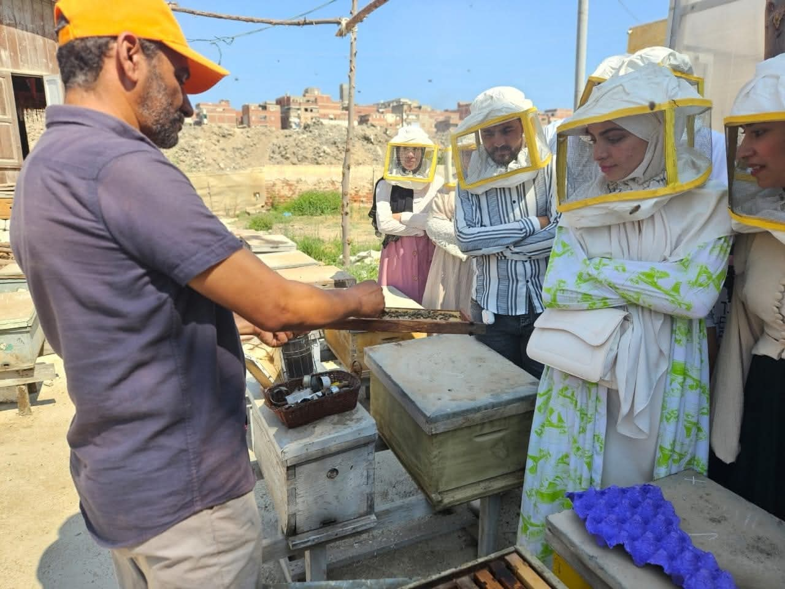

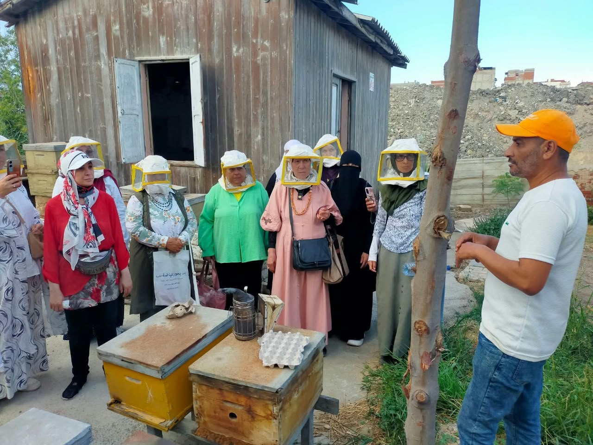
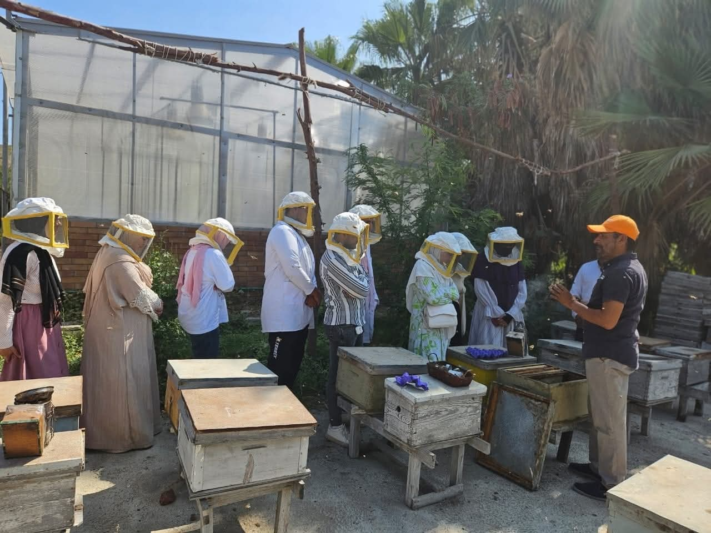
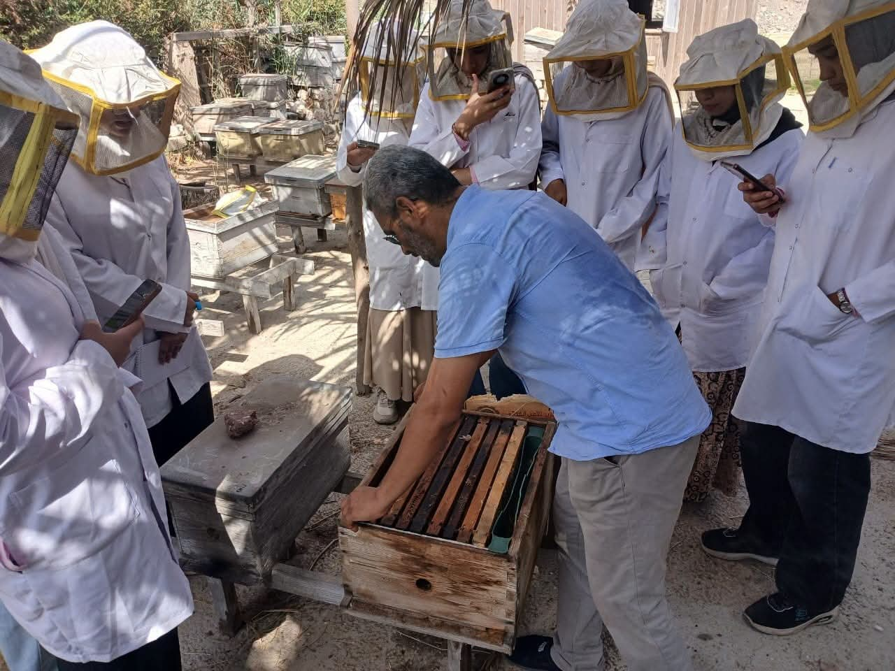